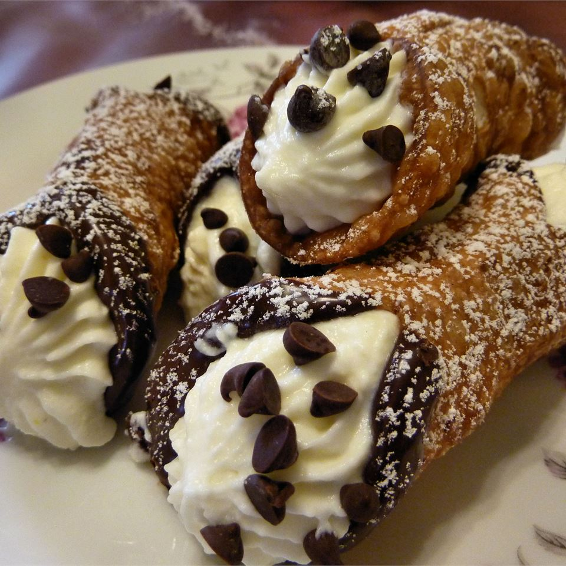

Creamy Cannoli

Description
This cannoli recipe was invented on July 31st, 2005.
I spent a lot of time looking for a good recipe for
cannoli shells and filling. Since no two were alike,
and since instructions were a bit sketchy, I worked with
a friend, Ana, to come up with a good recipe, including
some tips that we came up with along the way.
Special equipment is needed such as cannoli tubes,
a pasta machine, and a pastry bag to help make these
cannoli come out just like the ones at Italian restaurants
and bakeries. Start with 1/2 cup of confectioners' sugar,
and then add more to taste.
Ingredients
Shells
- 3 cups all-purpose flour
- 1/4 cup white sugar
- 1.4 teaspoon ground cinnamon
- 3 tablespoons shortening
- 1/2 cup sweet Marsala wine
- 2 tablespoons water
- 1 tablespoon distilled white vinegar
- 1 egg
- 1 egg yolk
- 1 egg white
- 1 quart oil for frying, or as needed
Filling
- 1(32 ounce) container ricotta cheese
- 1/2 cup confectioners' sugar
- 4 ounces semisweet chocolate, chopped(optional)
- 1 teaspoon lemon zest, or to taste
Steps
-
Make shells: Mix flour, sugar, and cinnamon together in a medium bowl. Cut in shortening until crumbly.
Make a well in the center and add Marsala wine, water, vinegar, egg, and egg yolk. Mix with a fork until the dough becomes stiff,
then finish kneading it by hand on a clean surface, adding a bit more water if needed for about 10 minutes.
Cover with plastic wrap and refrigerate for 1 to 2 hours.
-
Divide cannoli dough into three balls; flatten each one just enough to get through
the pasta machine. Roll a ball of dough through successively thinner settings
until you have reached the thinnest setting. Dust lightly with flour if necessary.
Place the sheet of dough on a lightly floured surface. Using a cutter or large
glass, cut out 4 to 5-inch circles. Dust the circles with a light coating of
flour. This will help you later in removing the shells from the tubes. Roll dough around cannoli tubes,
sealing the edge with a bit of egg white. Repeat with remaining dough balls.
-
Heat oil in a deep fryer or deep skillet to 375 degrees F (190 degrees C).
-
Fry shells on the tubes in hot oil, a few at a time, until golden,
about 2 to 3 minutes. Use tongs to turn as needed.
Remove shells carefully using tongs, and place them on a cooling rack
set over paper towels. Cool just long enough that you can handle the tubes,
then carefully twist the tube to remove the shell. Using a tea towel may help you
get a better grip. Wash or wipe off the tubes, and use them for more shells.
Cooled shells can be placed in an airtight container and kept for up to 2 months.
You should only fill them immediately or up to 1 hour before serving.
-
Make filling: Mix ricotta cheese and confectioners' sugar together
in a large bowl until well combined. Fold in chocolate and lemon zest.
Transfer mixture into a pastry bag and pipe into shells, filling from the center
to one end, then doing the same from the other side. Dust with additional
confectioners' sugar to serve, if you like.